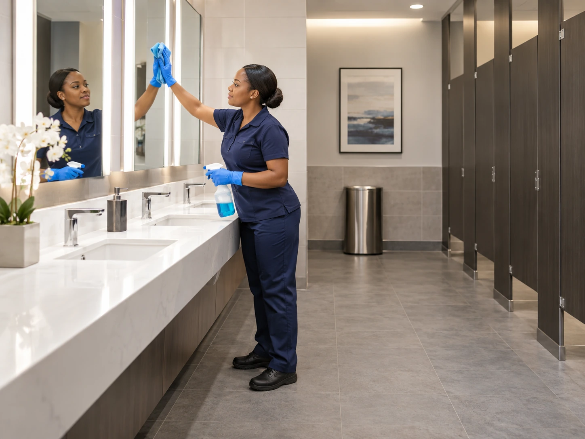
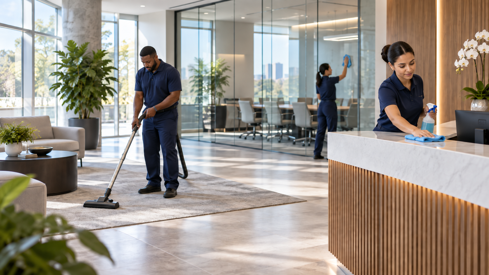
Commercial Property Types
Paradigm Janitorial Services provides commercial cleaning for offices, stores, restaurants, learning facilities, warehouses, and construction projects across Los Angeles County and San Bernardino County. The cleaning plan follows the property’s operating hours and use.
Office Cleaning
Cleaning for professional offices, reception areas, restrooms, breakrooms, floors, and glass.
Retail Cleaning
Cleaning around customer traffic, storefront glass, fitting areas, floors, restrooms, and store hours.
Learning Facility Cleaning
Cleaning for classrooms, training rooms, restrooms, common areas, and active learning schedules.
Warehouse & Industrial Cleaning
Cleaning for warehouse floors, loading areas, employee spaces, offices, restrooms, and shift schedules.
Construction Cleaning
Cleanup during and after construction, with final detail cleaning before turnover or occupancy.
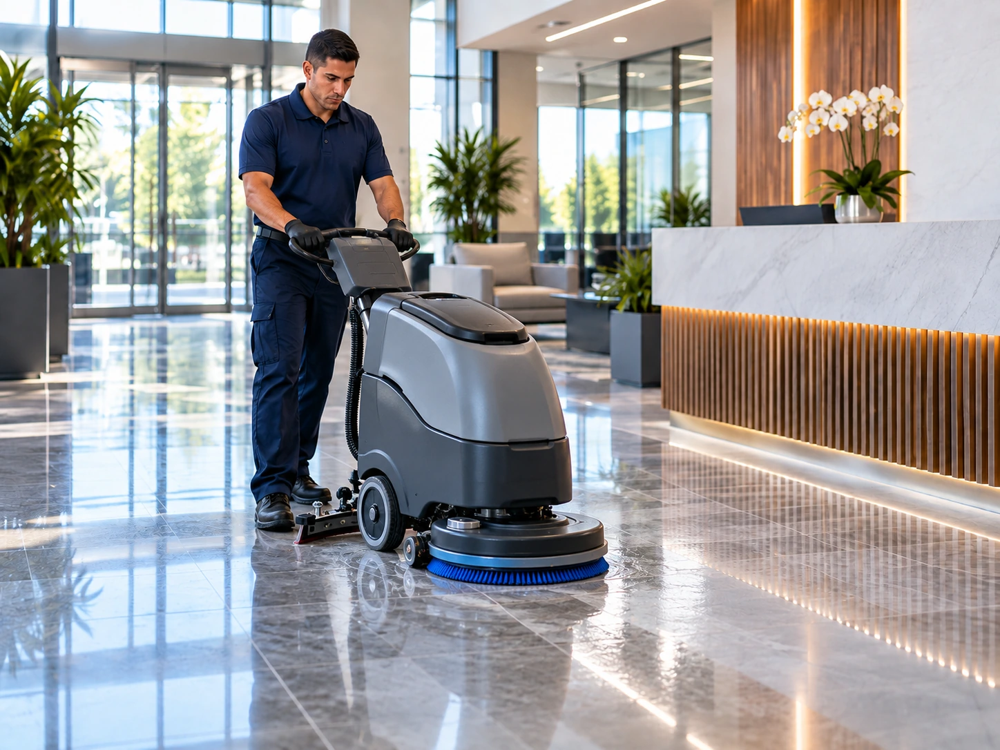
Floor Care
Care for tile, stone, carpet, and other flooring based on traffic, finish, buildup, and condition.
Restaurant Cleaning
Cleaning for dining areas, kitchen surfaces, floors, restrooms, trash, and closing routines.
Day/Night Porter Service
Ongoing support for lobbies, restrooms, trash, spills, supplies, and high traffic spaces while the property is active.
Ongoing Janitorial Care
Ongoing Janitorial Service
Restrooms, trash, breakrooms, floors, glass, disinfecting, and lobby care can be scheduled by frequency.
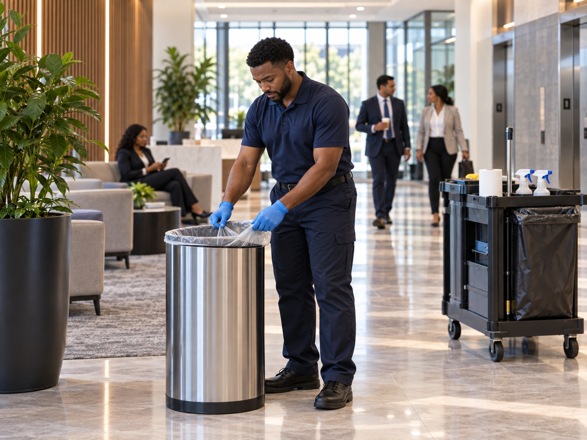
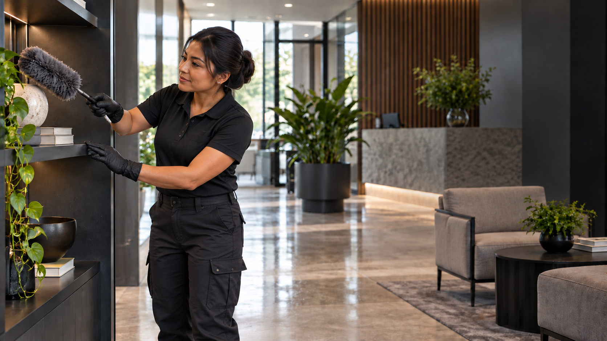
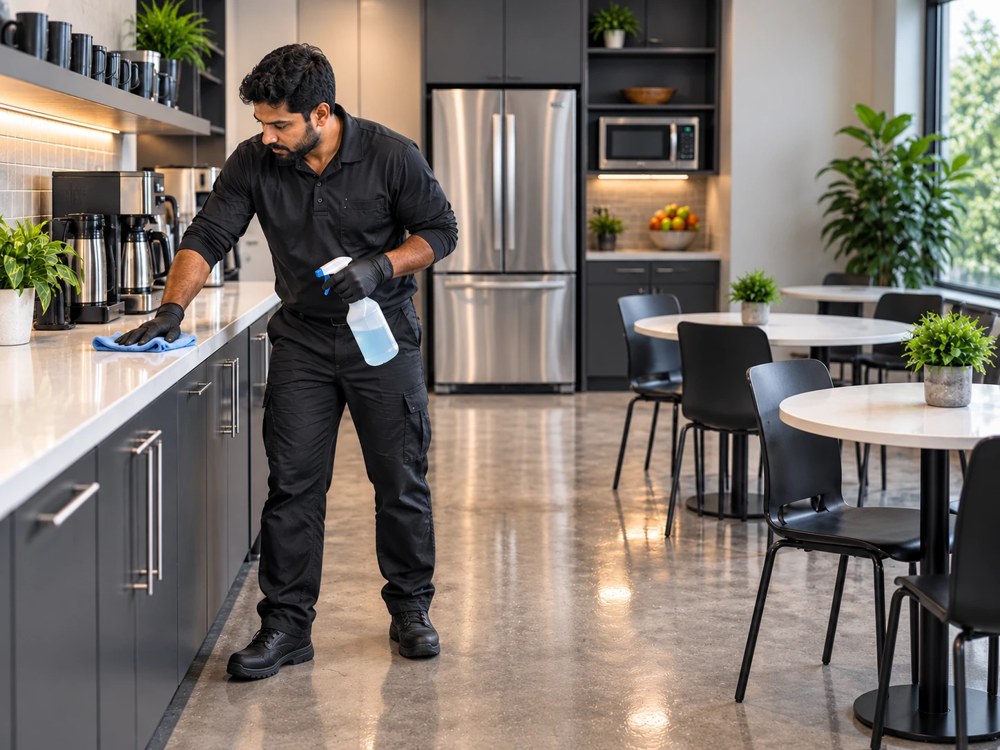
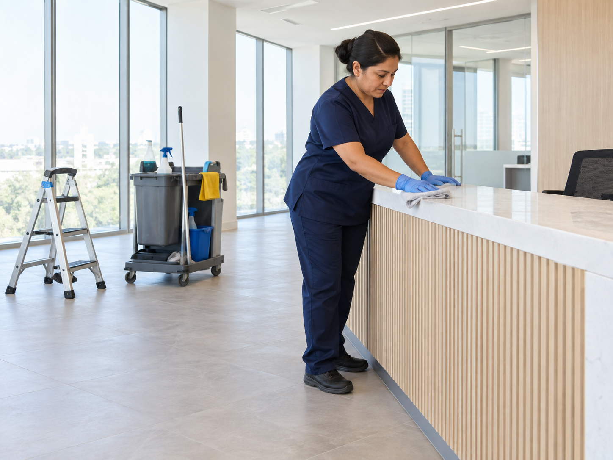
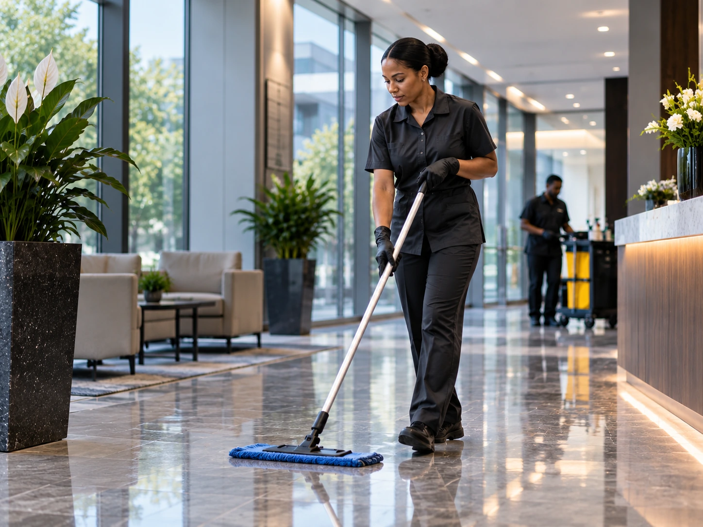
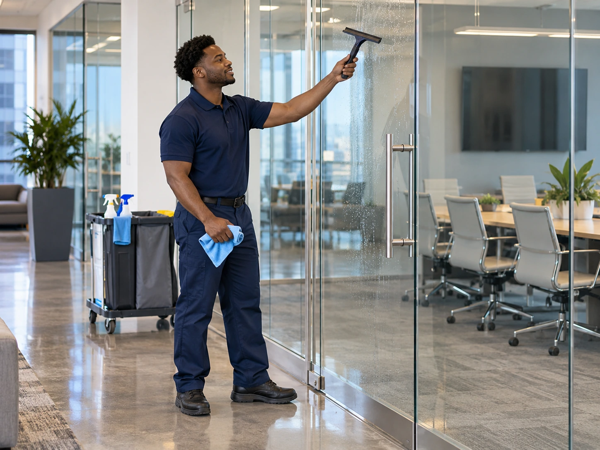
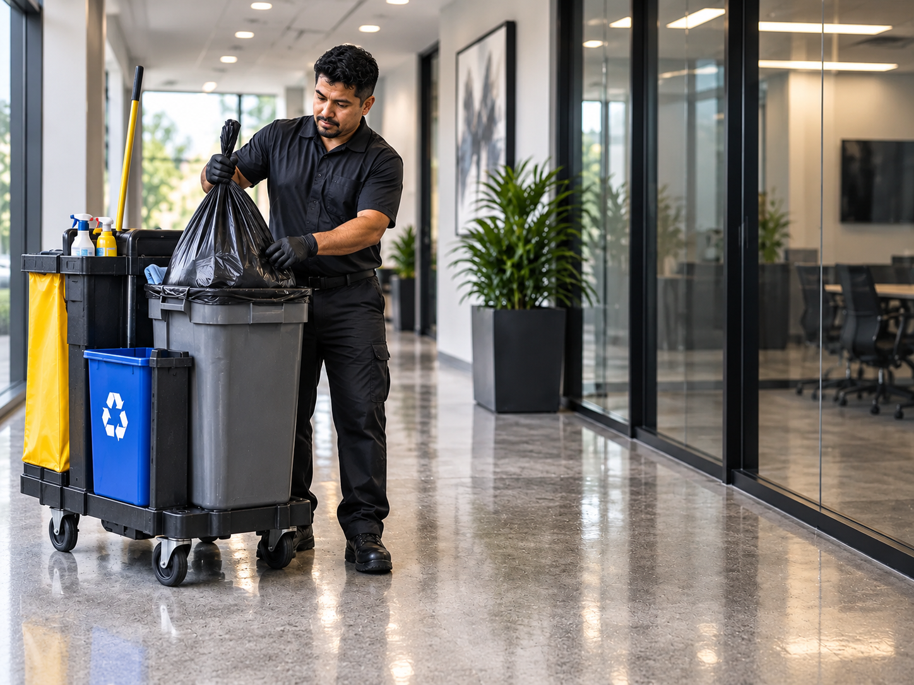
Day/Night Porter Service
Ongoing cleaning support for active properties during the day, at night, or both.
See Day/Night Porter Service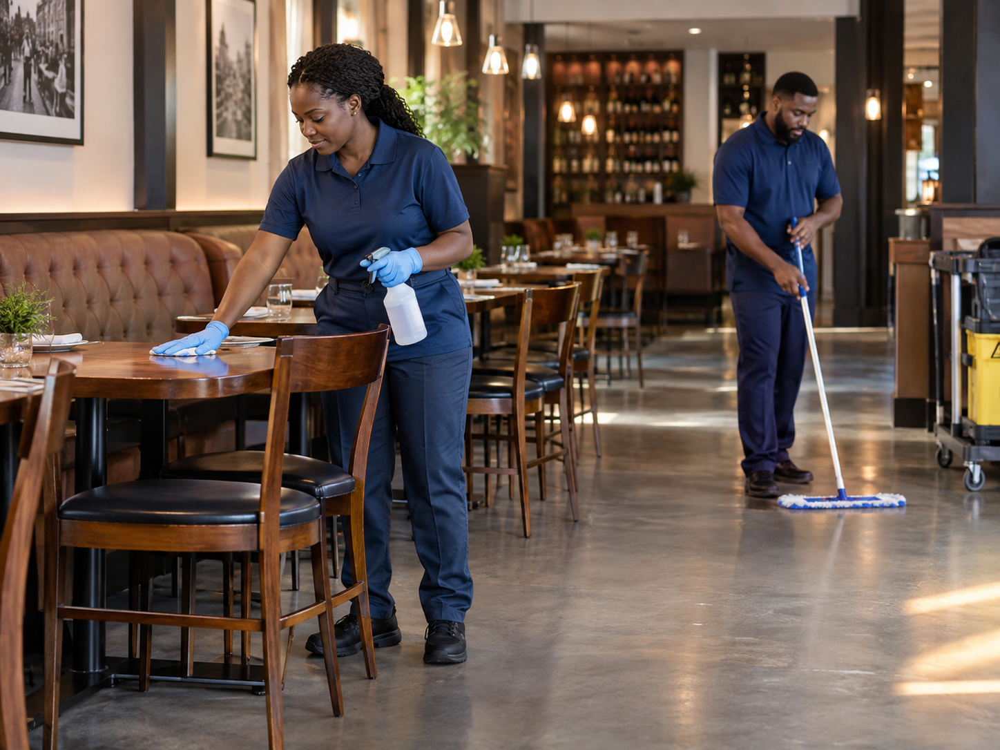
Restaurant Cleaning
Cleaning support for dining areas, commercial kitchens, restrooms, floors, and closing time cleanup.
See Restaurant CleaningCleaning Built Around Active Facilities
Operating hours, staff traffic, customer traffic, and access all affect what should be cleaned and when.
From public facing storefronts to busy warehouses and office suites, service can be built around the way the property actually operates.
The schedule can combine recurring janitorial cleaning, floor care, restrooms, glass, high touch areas, porter service, and specialty cleaning where needed.
Flexible SchedulesRecurring Janitorial ServiceRestroom & Breakroom CareFloor MaintenanceDetailed Surface CleaningHigh Touch DisinfectingDay/Night Porter ServiceRestaurant Cleaning